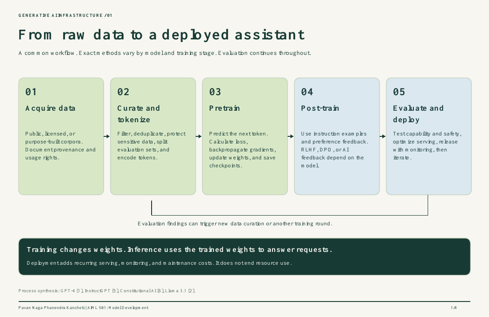
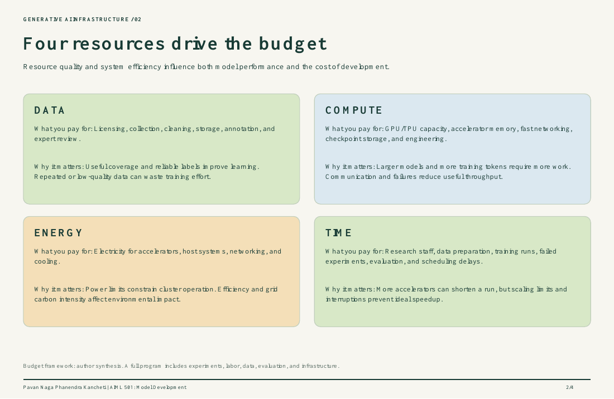
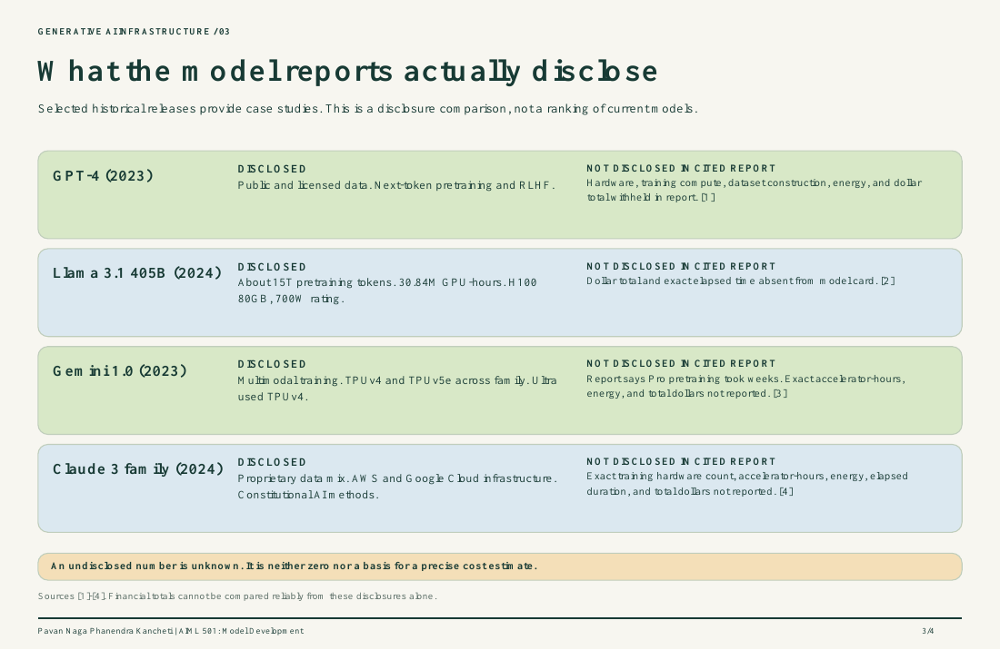
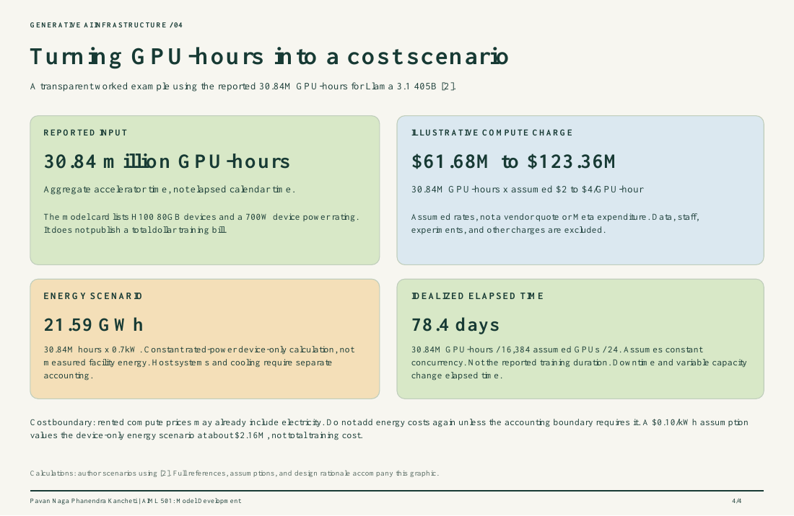

Data
What you pay for: Licensing, collection, cleaning, storage, annotation, and expert review.
Why it matters: Useful coverage and reliable labels improve learning. Repeated or low-quality data can waste training effort.
From raw data to a deployed assistant: the workflow, infrastructure, and resource costs behind GPT-4, Llama 3.1, Gemini 1.0, and Claude 3.
Pavan Naga Phanendra Kancheti / AIML 501: Model Development
Challenge: explain a complex training pipeline while avoiding false precision about proprietary costs.
Approach: combine a process diagram, resource cards, a disclosure comparison, and a reproducible calculation. Published facts, assumed rates, and undisclosed values receive explicit labels.
Skills demonstrated: infrastructure analysis, quantitative estimation, source evaluation, and accessible technical communication. This complements my algorithm classification framework by examining the systems and resources needed to train models.
A common workflow. Exact methods vary by developer. Evaluation continues across stages [1], [2], [5], [6].
Public, licensed, or purpose-built corpora. Document provenance and usage rights.
Filter, deduplicate, protect sensitive data, split evaluation sets, and encode tokens.
Predict the next token. Calculate loss, backpropagate gradients, update weights, and save checkpoints.
Use instruction examples and preference feedback. RLHF, DPO, or AI feedback depend on the model.
Test capability and safety, optimize serving, release with monitoring, then iterate.
Evaluation findings can trigger another curation or training round. Training updates weights. Inference uses trained weights and creates ongoing serving costs.
What you pay for: Licensing, collection, cleaning, storage, annotation, and expert review.
Why it matters: Useful coverage and reliable labels improve learning. Repeated or low-quality data can waste training effort.
What you pay for: GPU/TPU capacity, accelerator memory, fast networking, checkpoint storage, and engineering.
Why it matters: Larger models and more training tokens require more work. Communication and failures reduce useful throughput.
What you pay for: Electricity for accelerators, host systems, networking, and cooling.
Why it matters: Power limits constrain cluster operation. Efficiency and grid carbon intensity affect environmental impact.
What you pay for: Research staff, data preparation, training runs, failed experiments, evaluation, and scheduling delays.
Why it matters: More accelerators can shorten a run, but scaling limits and interruptions prevent ideal speedup.
Selected historical releases. This comparison shows disclosure, not a ranking of current model performance or price.
| Model | Disclosed | Not disclosed in cited report |
|---|---|---|
| GPT-4 (2023) | Public and licensed data. Next-token pretraining and RLHF. | Hardware, training compute, dataset construction, energy, and dollar total withheld in report. [1] |
| Llama 3.1 405B (2024) | About 15T pretraining tokens. 30.84M GPU-hours. H100 80GB, 700W rating. | Dollar total and exact elapsed time absent from model card. [2] |
| Gemini 1.0 (2023) | Multimodal training. TPUv4 and TPUv5e across family. Ultra used TPUv4. | Report says Pro pretraining took weeks. Exact accelerator-hours, energy, and total dollars not reported. [3] |
| Claude 3 family (2024) | Proprietary data mix. AWS and Google Cloud infrastructure. Constitutional AI methods. | Exact training hardware count, accelerator-hours, energy, elapsed duration, and total dollars not reported. [4] |
An unknown value is not zero. These disclosures cannot support a precise cross-provider financial ranking.
Reported input: 30.84 million H100 GPU-hours for Llama 3.1 405B [2]. All conversions below are author calculations under explicit assumptions.
30.84M GPU-hours × assumed $2 to $4/GPU-hour.
Hypothetical rates, not a current quote or Meta expenditure. Excludes other program costs.
30.84M hours × 0.7kW rated device power.
Assumes constant rated power. Not measured facility consumption. Host systems and cooling need separate accounting.
30.84M GPU-hours ÷ 16,384 assumed GPUs ÷ 24.
Assumes constant concurrency. This is not the reported run duration. Failures and changing capacity affect the result.
21.588M kWh × assumed $0.10/kWh.
Device-only scenario. Cloud rates may already include power, so adding this to rental costs can double count electricity.
Data acquisition, staffing, experimental runs, evaluation, storage, networking, and infrastructure also affect the full program budget. Carbon emissions require an electricity emissions factor and a stated accounting method.




Numbered steps explain sequence. Resource cards organize parallel costs. The disclosure table distinguishes known and unknown information. Numeric callouts keep calculations visible alongside their assumptions. Color supports grouping, while written labels carry the meaning. This page provides selectable text equivalent to the graphic.
Sources checked November 16, 2026. The linked explanatory document includes assumptions and background-source access notes. The supplied Wolfram article provides conceptual background. The course-specific portfolio requirements and two supplied YouTube videos were unavailable for content verification.